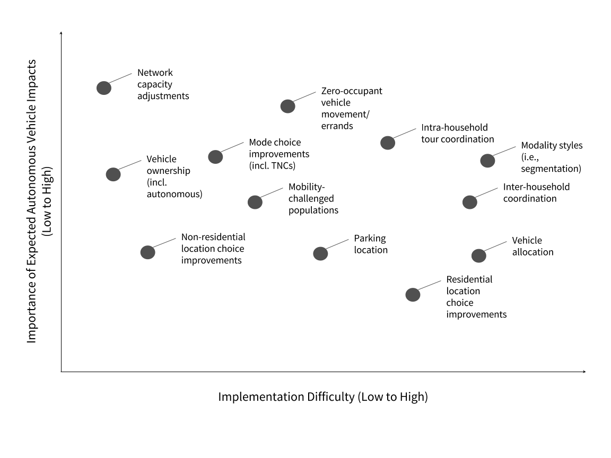
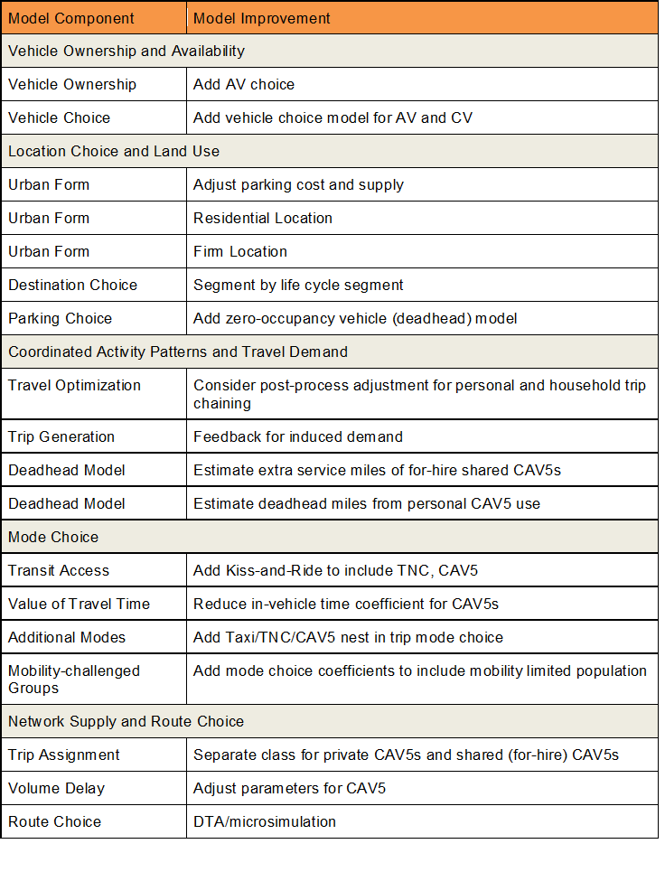

Autonomous vehicles: Modeling frameworks
A variety of modeling tools may be used to understand the impacts of autonomous vehicles. Ideally, model improvements that are high impact and easy to implement should be prioritized. In the chart below, we've attempted to map potential improvements relative to impact and implementation difficulty axes. We encourage agencies seeking to provide better information to the CAV policy debate to engage in the same exercise.

The following sections detail potential changes that could be considered to specific models to expand CAV modeling capabilities.Each subsection presents some initial considerations for alterations, varying in levels of implementation difficulty and impacts. These changes are only a starting point for considering model changes and will undoubtedly change over time in response to changing policy and future research.
Following the detailed subsections are a set of recipes, summarizing potential model changes and impacts, depending on the model system (activity-based, four-step, or strategic models). These tables provide a quick reference for grasping a scope of model changes potentially available at the present moment.
# Vehicle Ownership & Availability
A critical upstream model consideration is vehicle ownership and availability. CAV ownership could be modeled in addition to, or in place of a conventional vehicle ownership model. Most conventional ownership models include variables of income, number of household drivers, and other parameters like transit access and parking availability or cost. CAV ownership models would likely depend on income, but may no longer include number of drivers, since any household member could use the vehicle. Especially for early adopters, age may be an important variable for forecasting ownership of automated versus conventional vehicles, along with education level, based on analysis of stated preference data by Lavieri et al. (2017). Additional CAV-specific variables such as total daily time spent commuting, or an indicator for households with fewer cars than workers may be useful as well. Aside from stated preference analysis and assumed costs, there is currently little basis to describe future CAV owners. As vehicle are introduced in the coming years, it will be necessary to update and deepen these models with relevant parameters.
As a variety of different mobility services arise and change over time, the concept of vehicle ownership may change substantially enough that a traditional vehicle ownership model is no longer applicable for many households. For instance, access to shared CAVs and leased access to vehicles may be more widespread than privately owned individual vehicles. This could require adding ownership models for unique types of CAVs or considering an entirely new “access to services” approach in place of ownership models. Additionally, it may become increasingly unlikely that a household owns a mix of CAVs and conventional vehicles, but it may be necessary to include both vehicle types to model a transition time with low, but increasing CAV adoption. For true representation of behavior, the model should also consider vehicle availability, or whether or not the CAV is already in use by another household member. These potential changes should be understood as caveats to forecasts and future areas to watch as CAVs appear on the market.
# Coordinated Activity Patterns
Daily activity patterns drive the demand for travel and are represented in our models in several model components. These activity patterns impact the overall demand, the coordination among household and non-household members for traveling together (including chauffeuring activities), and trip chaining. Activity patterns may change in the following ways:
- CAVs could optimize travel for multiple household members, reducing overall household VMT. Current models were developed to accommodate non-optimized behavior so need to be adjusted to assume optimization.
- CAVs could provide more opportunity for trip-chaining among household members (or friends). Current trip generation models cannot account for trip-chaining, but activity-based models already account for this behavior. Strategic models do not currently account for trip-chaining either, but a VMT adjustment could be included to represent this.
- CAVs will induce travel (based on empirical evidence) so an induced demand factor can be included in trip generation to include these additional trips. Activity Based (AB) models already represent induced demand, but this should be recalibrated based on current TNC usage to ensure that the additional demand is within expected ranges.
- On-demand CAVs will generate extra service miles to reposition vehicles for the next customer. This can be estimated as a post-process for 4-step models or as a VMT adjustment for strategic models. These adjustments will need to be based on empirical data of current TNCs. AB models will need to include a deadheading model to represent these 0-person vehicles.
- Owned CAVs will generate extra miles when the owner sends the vehicle to park nearby, return home, or pick up another household member somewhere else. These deadheading trips could be included in a trip generation model with trip rates per vehicle (empty) added to existing trip rates per household based on empirical evidence from early experiments (Joan’s chauffeur survey). These vehicle movements could be included as part of activity pattern models of the vehicle in addition to those of the household members. Strategic models could represent this with a VMT adjustment factor.
# Location Choice and Land Use
Many of the impacts of CAVs will be reflected in short- and long-term location choice and impacts on the built environment. For instance, decreases (or perceived decreases) in travel times by CAVs would likely impact where people travel, work, and live. CAV-specific skims and lifecycle variables can be introduced to destination choice models in ABMs or advanced four-step models to measure short-term impacts based on immediate travel characteristics. Longer-term impacts like residential and firm location could also be captured with a land-use model that depends on travel times or logsums that include CAV travel times and costs.
Additionally, parking choice becomes important as both a primary and secondary impact of CAVs, which may require additional model considerations. Parking availability and cost at a destination will impact whether users leave the vehicle at the location (if parking is cheap and available) or send the vehicle further away to park, generating unoccupied (deadheading) to a further parking location, or even returning to home. The amount of deadheading influences additional roadway demand as a zero-occupancy trip, but could also impact terminal walk times between parking location and final destination. Many models today assume some average terminal times, based on land use variables, which may become more dynamic with CAV parking models. Capturing the magnitude of deadhead trips will be important to understand and potentially control with policy levers such as parking pricing, drop-off policies, and land use decisions.
# Mode Share
Updates to mode share models are critical for testing impacts of CAV scenarios. Existing model structures can be modified to reduce in-vehicle travel time for CAVs relative to conventional vehicles to represent the less-onerous nature of riding in a vehicle versus driving. Existing model forms may also be altered to remove restrictions of age on certain vehicle travel. For instance, age indicators may be removed, and new options added to reflect the fact that these users may now travel alone in CAVs.
Along with changes in value of time, and reduced restrictions on user types, mode share models may also be expanded to include emerging mobility options such as taxi/TNC services, either fully autonomous or operated by a human driver. Additionally, some distinctions may be necessary to differentiate a private CAV mode from automated for-hire CAVs (emulating today’s TNC/rideshare services, but functioning autonomously), which may be further segmented for single-household users versus shared for-hire CAV usage with other riders (operating like a rideshare carpool today). These separate modes could be nested in a way that makes the most sense to the existing mode choice model structure. If added, these modes should also be added to park-and-ride and kiss-and-ride models, so that the transit choice set is reflecting the full suite of access options now available. For TNCs and for-hire CAVs, base and per-mile pricing rates should be included as a generalized cost component. Pricing models can build off assumptions from currently operating TNCs, or could test the impact of various pricing policies on mode choice and travel demand.
# Network Supply
There is significant research on the operational improvements that are possible with CAVs, but most travel demand models cannot represent these operational improvements in any detail. Dynamic traffic assignment and traffic microsimulation models have emerged as the preferred tool to address these operational improvements, but these tools require significant time and resources to develop so may not be possible in all cases. Some of this research is being developed to quantify the detailed operational impacts so that these outcomes can be translated into parameter assumptions for aggregate trip assignment models.
The aggregate impact of CAVs of road usage efficiency can be modeled by altering network parameters like capacity. Assumptions about average capacity increases could be assumed and tested, or more sophisticated modeling could consider the impacts at a link or facility-level as a response to different policy interventions like targeted signal priority. More general testing could focus on the impacts of assuming that V2V and V2I are successfully and widely implemented, thus providing overall capacity increases of x% on freeways and y% on arterials.
# Model Modification Summary
This section summarizes specific model changes in four-step, activity-based, and strategic models that were discussed more broadly in sections above. The tables of potential improvements could serve as a starting point for considering which adjustments are available within each modeling framework, and provide some context of future paths forward for model enhancements that capture behavioral impacts of CAVs.
# Using Activity-Based Models for CAV Analyses
A state-of-the-practice activity-based model (ABM) should be well-situated for autonomous vehicle policy analysis after some modifications, depending on the specific set of policies to be studied. ABMs are built upon behavioral assumptions, so extending the choice set is easy, or at least mechanically possible in many cases. Though CAV-specific coefficient values may be unavailable to estimate at present, they can be introduced as important levers for sensitivity testing and scoping. The following table provides a starting point for considering which features of an ABM can be modified to extend AV analysis capabilities.

# Using Trip-Based Models for CAV Analyses
While trip-based models are not as naturally suited to AV analysis as ABMs or strategic models, there are many improvements that can be made to improve their sensitivities for AV futures. Vehicle ownership models can be modified very much the same as in ABMs, and integrated transportation land-use would be modified similarly, where residential and firm locations are based on AV skims. Mode share models could be expanded as in ABMs to account for the variety of new modes (personal AVs, shared/unshared for-hire trips).

# Using Strategic Models for CAV Analyses
Like activity-based models, strategic models are structured to be able to represent autonomous vehicle policies analysis well, but will require some modifications. Strategic models are currently sensitive to many of the behavioral impacts required and can be adapted to represent changing behaviors. VisionEval is an example of a strategic modeling framework that has been used to represent emerging travel modes.
Strategic models have several components that are relevant to vehicle ownership and availability, including representing vehicle ownership costs (purchase, insurance, operating), bike ownership, vehicle age and fuel efficiency. In addition, these can be easily adapted to include carshare and bikeshare membership. Strategic models also incorporate household budgeting, allowing the introduction of AVs into the household budget.
Urban form is currently represented in strategic models as a combination of development and area type (e.g. transit-oriented development in a residential area). These can be adjusted to incorporate place types that are important for CAVs (e.g. parking constrained areas). Life cycle variables that define modality choice (e.g. young single adults, families, retirees, etc.) can also be incorporated into the urban form and VMT models.
Most strategic models estimate VMT directly and adjustments for different policies are provided through empirical research. These adjustments can be included for households that optimize their travel with CAVs and/or adjust their trip chaining because the CAV can be used to pick up and deliver multiple household members. A new model component to estimate the VMT associated with deadheading (i.e. cars with no occupants that are repositioned or sent to pick up another passenger) could be developed for both privately owned CAVs and for-hire CAVs. Strategic models also currently evaluate induced demand but this impact may need to be evaluated once empirical evidence on CAV use is empirically documented.
Strategic models do not typically include a traditional mode choice model. Instead, modal shares of interest are directly modeled based on characteristics of supply and demographics. Models can be constructed to directly estimate VMT from for-hire services (e.g. carshare, bikeshare or transportation network companies) or other modes that may emerge.

# Using Microscopic Models for CAV Simulations
PTV’s Vissim and Caliper’s TransModeler both provide flexibility in the representation of basic driver behaviors and vehicle types in their latest software versions that allow the user to build CAV operating characteristics into the vehicle fleet. As previously referenced in the Jacksonville synopsis, key traffic flow parameters impacted by CAV include:
- Acceleration/deceleration
- Car following headways
- Platoon size and formation
- Choice of travel speed
- Gap acceptance in lane changing
- Removal of stochastic processes on vehicle-controlled functions
- Fleet and vehicle type parameters that allow different adoption patterns and levels of autonomy
Beyond the driver behavior and fleet adjustments that are now streamlined in commercial microsimulation software, custom enhancements are still needed to better reflect V2V and V2I communications:
- Enhanced mobility applications such as platooning and adaptive speed control
- Safety applications such as dynamic conflict warning or automated braking to prevent collisions
- Real-time updates to demand and routing based on emerging mobility options
- Dynamic operations of the network and traffic control including reservation-based signal operations.
Prior to commercial mainstreaming of CAV functionality, researchers from University of California at Berkeley performed on-the-road testing of cooperative adaptive cruise control (CACC), which serves as a good surrogate for CAV operations on freeways due to vehicle speed control and vehicle gap control. The research team used their field operations data to develop dynamics models reflecting the observed behaviors with a microsimulation tool and customizations to introduce logic control to switch between manual driving mode and vehicle control mode. The manual driving mode was calibrated to field conditions before running scenarios at various CACC penetration levels. The results show that for a congested freeway corridor an increase in platooning-capable vehicles to between 20% and 40% of the vehicle fleets leads to dramatic increases in travel speed and resultant decrease in delay. Freeway capacities in areas outside the influence of freeway ramps were estimated to reach 3,500 vehicles per lane, a 67% increase. (Liu, Kan, Shladover et al, 2018). The reference also contained a history of other studies of CACC in the literature.
Base Vissim operations were customized in Liu, Kan, Shladover et al (2018) to test CACC based on the field data. The customizations to Vissim included the following added functionality:
- Defining constant headways to maintain when operating in a platoon;
- Applying the cut-off criteria to determine whether vehicles should join a platoon;
- Identifying when splitting a platoon would occur; and,
- Resetting modified platoon behaviors to the vehicle’s individual behavioral preferences when operating in isolation.
# References
CDM Smith (2019). CAV Traffic Simulation Literature Review
Lavieri, P., V. Garikapati, C. Bhat, R. Pendyala, S. Astroza, and F. Dias (2017) Modeling Individual Preferences for Ownership and Sharing of Autonomous Vehicle Technologies. Transportation Research Record 2665: 1-10. http://dx.doi.org/10.3141/2665-01
Liu, H., Kan, X. (David), Shladover, S. E., Lu, X. Y., & Ferlis, R. E. (2018b). Impact of cooperative adaptive cruise control on multilane freeway merge capacity. Journal of Intelligent Transportation Systems: Technology, Planning, and Operations, 22(3), 263–275. https://doi.org/10.1080/15472450.2018.1438275